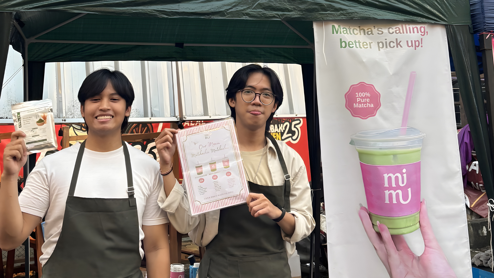
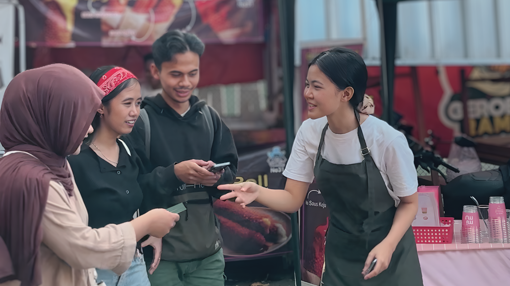

Overview
Matchachie Matchachu, widely known as "MiMu", is a matcha brand that organically grew from a college project in Bandung into a thriving business. Recognizing a unique market opportunity, I partnered with one of the original Bandung founders to bring MiMu to my hometown, Tasikmalaya. We launched a limited-edition branch during a 10-day Ramadan bazaar at GGM Dadaha. As the Tasikmalaya Co-Founder and Operations Lead, I managed the entire supply chain, packaging, print marketing, and direct hands-on brewing to ensure quality control.
The Challenge
Entering the Tasikmalaya market presented two critical, interwoven challenges: pricing and consumer education.
- The Market Gap: Tasikmalaya had cafes offering premium ceremonial-grade matcha, but they were priced at 30k IDR and above—a price point too steep for daily consumption by the local demographic.
- The "Grass Taste" Myth: There was a massive educational gap. Most locals equated "matcha" with the bitter, grassy taste of low-grade green tea, making them hesitant to try our product.
- Time Constraint: We only had a 10-day window during the Ramadan bazaar, operating for merely 3 hours a day, to prove our business model and capture the market.
The Execution & Solution
I approached this business challenge with the same discipline used in engineering systems—focusing on logic, tracking, and aesthetic precision.

Aditya (left) presenting the pure premium matcha powder, alongside his partner (right) holding the menu for proactive customer pitches.
- Accessible Premium Quality: We imported 100% pure premium matcha directly from Japan (via our Bandung supply chain). By optimizing our operations, we disrupted the local market by offering premium grade matcha starting at just 20k IDR, with heavy promotional discounts dropping it to 15k IDR.
- Proactive "Guerilla" Marketing: We refused the traditional "wait for customers" bazaar approach. We actively walked the bazaar grounds, pitching directly to pedestrians of all ages, explaining the difference between authentic matcha and generic green tea.
- Visual & Digital Presence: I managed active daily Instagram updates for digital visibility and designed a striking physical X-Banner heavily emphasizing our "100% Pure Matcha" branding to capture foot traffic.

My partner actively engaging the crowd and distributing loyalty flyers to educate the market on authentic matcha.
The Impact
The 10-day sprint was a massive operational and financial success. By meticulously tracking daily sales and cash flow over our incredibly tight operational window (only 30 cumulative operating hours), we achieved a staggering 70% Return on Investment (ROI). More importantly, we successfully educated a new demographic, proving that strategic pricing combined with proactive, on-the-ground marketing can instantly create a loyal customer base in an untapped market.